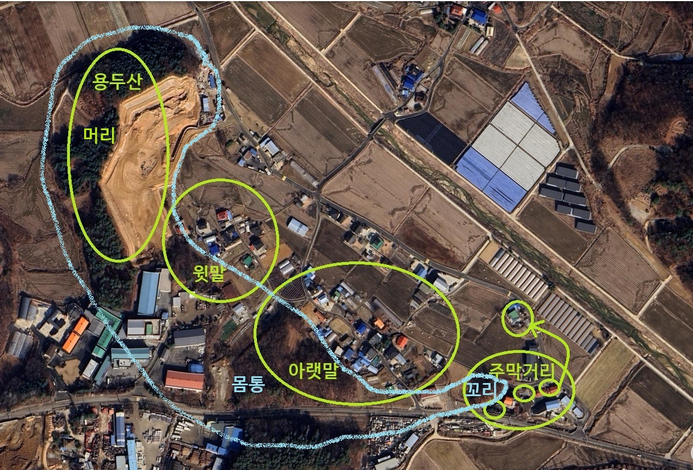

용머리는 경기도 안성군 삼죽면 용윌리의 한 마을(부락)이다. 용월리는 용두(용머리), 월앙(달과리), 톨미(외토), 내토 등으로 구성된다. 원래 죽산군 서일면 지역이었으나, 1914년 행정구역 개편 때 용두(龍頭)와 월곡(月谷)의 앞 글자를 따서 지금의 용월리가 되었다고 한다. 용머리는 마을을 포근하게 감싸고 있는 뒷산의 모양이 마치 용의 머리처럼 생겼다고 하여 붙여진 이름이다. 이를 한자로 바꾸어 용두리 또는 용두마을이라고도 부르는데, 풍수지리적으로 용의 기운이 시작되거나 모이는 상서로운 곳이라는 의미를 담고 있다. 내가 태어난 집은 용의 끝자락에 위치해 있었다. 달과리는 마을이 위치한 계곡이나 지형이 달처럼 둥글게 감싸 안은 형상이거나, 밤에 달빛이 아름답게 비치는 골짜기라는 뜻에서 달과리 또는 달고개로 불렸다. 이를 한자로 표기한 것이 바로 월곡마을이다. 달과리는 용월리에서 가장 많은 주민이 모여 살아온 중심 마을로, 지형이 아늑하고 풍요로운 정서를 자아내는 곳이다. 내토(안터)는 한자 그대로 안쪽에 있는 터라는 뜻이다. 넓은 벌판의 중심에 자리 잡고 있다고 해서 주민들 사이에서는 벌터라는 순우리말로 자주 불렸다. 이 이름의 의미는 해당 지역의 아늑하게 들어선 평야 지대의 중심 부락을 뜻한다. 외토(바깥터) 및 톨미 (돌미/톨뫼)는 내토의 바깥쪽에 위치한다고 하여 외토(바깥터)라 부른다. 특히 이 지역에 있는 산이 홀로 외따로 떨어져 있는 산이라고 하여 톨뫼(외따른 산) 또는 톨미/돌미라는 독특한 이름이 붙었다. 이 산은 지형이 매의 머리를 닮았다 하여 매봉이라고도 한다. 예전에 외토마을의 매봉 정상에서는 정월대보름마다 온 마을 주민이 모여 망월(달맞이) 행사를 지냈다고 한다. 공동체 협동 정신이 빛났던 전통 두레 문화 용월리는 이 지역은 용(용머리)의 기운과 달(달과리)의 은은함이 지형에 그대로 녹아있고, 벌판 안팎(내토·외토)으로 이웃하며 대보름 달맞이와 두레를 이어온 정겨운 공동체 역사를 품고 있다.
용머리는 대략 3~40여호가 있는 시골 마을이다. 마을은 크게 3개의 구역으로 나눠어져 있다. 용머리 산쪽의 위로부터 윗말(윗마을), 아랫말(아름말), 아랫쪽에 주막거리가 있다. 윗말에는 9개 정도의 집이 있었고, 아랫말에는 20여개 정도의 집이 있었고, 주막거리에는 3집이 있었다. 우리 집은 주막거리에 있었고, 바로 옆에 행길이 있었고, 집 옆에 작은 동산이 있었다. 행길이 있어서 차가 다니는 것을 자주 봤고, 지나가는 사람들이 가끔 들르기도 하였다. 집 바로 옆 동산에는 산소가 하나 있었고, 산소에는 잔디가 심어져 있어 놀기에 좋아서 가끔 친구들이랑 여기서 놀곤 했다. 겨울에 산소에 눈이 쌓이면 는 비료 푸대를 들고 올라가서 눈 미끄럼을 타기도 했다. 동산 위에 방공호를 길게 파서 동네 주민의 피난처로 만든 적이 있는데, 낮 뿐만 아니라 밤에도 그 방공호에 들어가서 놀기도 했다. 그 당시 랜턴 등이 없어서 밤에 방공호에는 칠흙같이 어두웠는데, 빛이 나오는 나무뿌리 같은 것을 들고 다니기도 했다. 그러면 서로 상대가 어디 있는지를 알 수 있어서 방공호 안에서 돌아다니다가 서로 부딪히는 것을 막을 수 있었다. 우리집 뒤쪽에 차 한 대 간신히 지나갈 수 있는 도로가 있고, 도로 건너에 바로 동산이었는데, 길에 바로 위치한 경사에서 나무 뿌리나 칡 넝쿨들을 여러줄로 늘어뜨리고, 그걸 잡고 올라갔다가 내려오는 놀이를 친구들이나 동생들과 자주 했다.
집 앞에는 텃밭이 있었다. 그 밭에는 무, 배추, 오이, 시금치, 아욱 등도 심고, 옥수수, 당근도 심어서, 밥할 때마다 어머니는 늙은 오이를 따오라고 시킨적이 많았다. 집 옆에 회장실이 따로 있었고, 화장실 건물 옆으로 닭장도 있었고, 그 뒤쪽에는 두엄이 있고, 그 뒤로 돼지 울간도 있었다. 두엄 옆에는 보라색 꽃이 예쁘게 피는 도라지 무리도 있었다. 행길 건너에도 조그만 밭이 있었는데 거기에는 감자랑 마늘, 파 등을 심었다. 밭 끝 논 쪽에 커다란 밤나무가 있었는데, 가을에는 밤을 따서 큰집과 나누어 먹었다. 그 밭과 논 주인이 큰집이었다. 밤이 논으로 많이 떨어져셔 논을 헤매며 밤을 주웠다. 집 앞에는 살구나무가 하나 있었다. 나무가 아직 어린지, 아니면 다른 이유에서인지 가지가 많지 않았고, 열매가 열리지 않았다. 아버지가 그 나무를 뒷마당으로 옮기자고 하였는데, 어머님 꿈에 젊은 여자가 나와 절을하며 자기를 옮기기 말아달라고 부탁을 했다고 한다. 아버님은 그 꿈을 우습게 여기셨고, 나무를 집 뒤로 옮겨 물도 주고 잘 살리려 하였으나 끝내 말라서 죽었다.
우리집은 기와집이었고, 마루에 누워 천장을 보면 지붕을 받치는 대들보와 서까래들이 보이는데 여기에 한자로 지은 날을 같이 적어 놓았는데, 그 날자가 1961년으로 기억한다. 1961년이면 내가 태어난 해이다. 나중에 70년대 중반에 전기가 들어왔을 때, 여기 천장의 서까레에 애자들을 박아서 전기선을 여러 방으로 연결해서 끌어 ㅤㅆㅓㅅ다. 방은 안방, 마루, 건너방, 그리고 안방 뒤에 작은 마루와 일도 같이 하던 창고 공간, 그리고, 부엌과 뒷방 들이 있었다. 뒷방은 60년대 말에 홍수로 방이 물에 잠긴 주막거리 맨 밑의 집에서 임시로 와서 살기도 했고, 학교 여선생님이 와서 살기도 했다고 한다. 그 집은 홍수가 끝나고 다시 원래의 집에 들어가 살다가 새 집터에 집을 지어 이사를 해서 그 곳에서 쭉 살고 있다. 초등학교 여선생님은 잠시 있었다고 하는데, 어머님이 그 선생님이 여기에 사는 것을 안좋아 하셨다고 누나가 말했다. 그 방은 우리들 방으로 쓰기도 했다가 나중에는 창고로 ㅤㅆㅓㅅ다. 건너방은 나중에 고추를 말리는 방으로 개조해서 사용했다.
언젠가 안방에 구렁이가 들어왔다. 안방 위쪽 벽 안쪽으로 들어간 공간이 있었고, 거기에 이불을 개서 두었는데, 어머님이 그 안에서 뱀을 발견하셨다. 우리는 깜짝 놀랐고 동네 사람들에게 알리고 물어 보았는데, 구렁이는 영물이니 잡지 말고 나갈때까지 기다리는게 좋겠다고 하였다. 며칠 있다가 그 능구렁이는 사라졌는데, 그 이후에 언젠가 식구들 모두 잠을 자는 사이에 하늘이 무너지는 꽝 소리가 났다. 깜짝 놀라서 일어나 보니 마루의 서까래가 부러지는 소리였다. 우리는 혼비백산하여 일어나 대피하였고, 다행히 집은 무너지지 않았다. 나중에 집짓는 인부를 불러 수리하였는데, 그 천장에서 흙이 엄청 나왔다. 그 흙 무게가 너무 무거워 지탱하던 서까래가 부러진 것이었다. 흙을 다 파내고, 다시 지붕을 만들어 수리하고 이후로 그런 문제는 없었다.
안방 아랫목에는 벽장이 하나 있었다. 벽장은 부엌의 윗 편에 돌출해 위치하는 공간이고, 어릴때라 문을 열고 점프를 해야 간신히 벽장에 올라 갈 수 있었다. 벽장에는 여러가지 물건들이 쌓여 있었다. 그 중에 하나가 멸치 봉지였는데, 큰 멸치가 냄새가 좀 나도 먹다 보면 제법 맛이 있었다. 시골 겨울은 추워서 보통 방에 화로를 놓는다. 화로불 옆에서 불을 쬐면 아주 따듯했다. 겨울에 밖에 나갔다가 들어오면 우선 아랫목 뜨듯한 이불속으로 몸을 녹이거나 화롯불에 손과 몸을 녹였다. 그런데, 화롯불을 너무 쬐이면 어질어질 하기도 했다. 내 동생도 벽장에 몰래 올라가 멸치를 먹고 내려오고 그랬는데, 한겨울에 동생이 벽장에서 어찌하다 떨어졌는데, 마침 바로 밑에 있던 화로로 떨어졌다. 등이 화로불에 지져졌고 그 부분에 흉터가 생겼는데, 지금도 그 흉터가 남아 있을 것이다. 추운 겨울을 보내는 또 다른 방법은 아궁이에 왕겨를 잔뜩 넣는 것이다. 그러면 왕겨가 밤새 조금씩 타면서 방안의 온도를 따듯하게 유지해준다. 겨울에는 추워서 목욕을 자주 못한다. 그래도 너무 오래 목욕을 안하면 몸에 때가 끼이니까 한두번 정도 목욕을 하게 되는데, 보통은 부억에서 함지박에 뜨거운 물을 담아 놓고 목욕을 했다.
시골의 겨울은 너무나 추웠다. 바닦은 차가웠고, 창호지로 바람이 숭숭 들어왔다. 그래서 안방 부엌에 장작과 함께 불을 넣고, 모두 안방에서 이불을 깔고 잤다. 뜨거운 맨 아랫목에는 막내의 차지였다. 그 다음에 엄마, 아버지, 그리고 동생, 나, 그리고 형이 추운 맨 윗목에서 잤다. 누나는 중간에 어디 있었던 것 같다. 당시는 석유를 사용하는 등잔불을 ㅤㅆㅓㅅ다. 그 전에는 초롱불을 썼는데, 불이 약하고 바람에 잘 꺼졌다. 언제부터인가 등잔불이 유행했는데, 중간에 유리가 바람을 막아 주어서 불이 잘 꺼지지 않았다. 심지도 굵어서 불이 밝았다. 등잔불은 불 붙이는게 좀 까다로왔다. 유리에 연결된 철사 같은 것으로 유리를 밀어 올린 다음, 성냥을 켜서 긴 종이에 불을 붙이고, 이 종이를 밀어 넣어 안쪽의 심지에 불을 붙였는데, 한 번에 잘 안되고 몇 번을 해야 불이 붙는 경우가 많았다. 불을 끌 때도 마찬가지로 유리를 들어 올려서 입으로 바람을 불어서 불을 껏다. 불을 붙일 때와 끌 때에는 석유 냄새가 많이 났다. 그래도 밤에 등잔불을 가지고 이동하더라도 바람에 불이 잘 안 꺼져셔 이 등잔불은 아주 유용했다. 집안에서뿐만 아니라 밤 이동에 필수품이었다. 나중에 랜턴이 나오면서 야간 등잔불은 랜턴으로 변경되었다. 그때는 아궁이나 등잔에 불을 붙이기 위해 성냥을 많이 사용하던 시절이다. 어느집에 가든 방에 성냥이 굴러 다녔다. 한번은 형이 우리 동생들을 모아 놓고, 방에서 한 300개 성냥이 들어 있는 성냥곽에 불을 붙이면 어떻게 될까 보자고 하여서 불을 붙였는데, 그 불길이 천장까지 올라갔다. 형과 우리는 황급히 불을 끝 적이 있었다.
연탄이 등장하면서 아궁이 문화가 바뀌었다. 아궁이는 나무나 장작 대신에 연탄이 들어가게 모양이 바뀌었다. 연탄은 밤새 꺼지지 않고 열을 잘 내 주었다. 연탄을 갈 때는 구멍을 잘 맞춰 줘야 한다. 불을 살릴 때는 번개탄을 ㅤㅆㅓㅅ다. 그래도 사랑방이나 문간방 등은 아궁이를 계속 썻다. 연탄을 사려면 돈이 들었기 때문이다. 나무나 장작은 산에서 얼마든지 구할 수 있었다. 언제무터인가 나라에서 산에서 나무를 못하게 했다. 산이 황폐해진다는 이유였다. 특히 갈퀴로 나뭇잎을 긁어오지 못하게 했다. 신고하면 벌금도 낸다고 했다. 연탄이 보급되면서 가끔 사고도 났다. 연탄가스 중독 소식을 가끔 들었다. 누나도 방에서 자다가 연탄가스 중독이 되었다. 일어나서 화장실을 가려는데 머리가 아프고 몸이 어질어질하면서 마당에 쓰러졌다. 그러면 뉘어놓고 김치 국물을 마시는 응급조치를 하였다. 제대로 된 응급 조치는 아니었지만 그때는 그런식으로 정신을 차렸다.
내가 초등학교 시절 언젠가 밤에 숙제인지 공부인지를 하고 잤다. 겨울이라 모든 사람은 다 안방에서 모여 잤고, 나는 추위에 이불속에 누워서 공부를 하다가 그만 잠이 들어버렸다. 잘자다가 머리맡의 등잔불을 손으로 쳤는지, 석유가 나오고 불이 붙어서 창호지 방문으로 불이 옮겨 갔다. 어머님이 잠에서 깨서 불을 발견하셨고, 식구들을 깨우고, 아버님은 불 붙은 등잔불을 급히 손으로 잡아서 밖으로 던졌는데, 손에 화상을 크게 입으셨다. 이불에도 불이 붙어서 함지박에 불을 넣고 이불을 담가 불을 끄려 했는데, 솜에 붙은 불이 함참 탔다고 한다. 아버님은 그 화재로 손을 데어 한동안 고생하셨다. 그런데도 나에게 뭐라고 하는 말을 안하셨다. 아버님도 아픈 기색을 하지 않았고, 어머님도 뭐라 하지 않았다. 누나가 나중에 아버님이 손을 데어 함참 고생했다는 말을 나에게 했다.
아버지는 그래도 일제 강점기 초등학교를 다니셔서 한자 및 한글을 잘 아시었다. 그래서 용머리 이장을 오래 하시었다. 이장의 임무는 면에서의 하는 일을 동네에 전하는 일이 많았다. 그래서 이장 회의를 자주 다니셨다. 회의에 시간을 맞추기 위해 시계가 필요했다. 어머님은 월 천원씩 내는 적금을 2년 정도 들고, 만기에 그 돈을 타서 한참 텔레비젼 선전에 많이 나오던 오리엔트의 쟈갸포카스 손목 시계를 샀다. 그 선전은 호랑이가 포효하는 멋있는 영상이 있는 금속 시계줄의 톱니형 시계였다. 아버님은 면에서 열리는 이장 회의때마다 그 시계를 차고 가셨다. 그런데 회의를 안가실 때는 그 시계를 찰 일이 없으셔서, 그때는 내가 그 시계를 차고 다녔다. 아마 중학교 시절인 것 같다. 그래서 평소에는 내가 시계를 차고 학교에 다니고, 이장 회의가 있는 날에만 아버지가 차고 가셨다. 그 시계는 내가 나중에 군에 있을 때도 찻고, 제대후 대학에 다닐때도 차고 다녔다. 마을에 스피커 시설을 했는데, 우리집이 이장집이라 앰프를 마루에 두었다. 앰프시설에 전축 시스템도 같이 들어있었다. 그때 들었던 가수와 노래들이 가끔 생각난다. 한번은 마을에서 짚단 쌓아 놓은 곳에 불이 났다. 마이크로 동사 사람들을 깨우고 불을 끈 다음에, 아버지가 불조심을 하자고 한밤에 오랫동안 마이크로 시끄럽게 얘기했다고 누나는 애기하곤 했다.
마루 바로 앞은 봉당이다. 봉당은 1미터 정도 넓이로 마루와 부엌앞 등 집 앞부분에 쭉 연결되어 늘어져 있는 공간이다. 봉당은 땅이 평평하고 고와서 아이들이 놀이하기에 좋았다. 특히 공기놀이하기에는 아주 안성맞춤이었다. 우선 공기돌 5개를 바닥에 던진다. 처음에 하나를 짚고, 하나를 공중에 던지고 땅에 있는 하나를 손으로 취하고 하늘로 던진 돌을 다시 잡는다. 나머지 네 개도 계속한다. 이게 1단이다. 틀리지 않고 다 했으면 2단으로 넘어간다. 2단은 바닦의 2개를 취하는 방식이다. 다음의 3단은 3개와 나머지 1개, 4단에서는 네 개 전체, 그리고 검지로 땅을 닿는 고추장을 하고, 마지막에는 5개의 돌을 던져 손등에 받친다음 손을 돌려 돌을 잡으면 그게 점수이다. 손등에 걸린 것은 모두 잡아야 한다. 하나라도 놓치면 실패이고 돌을 상대에게 넘겨줘야 한다. 3개를 손등에 올리고 다 잡으면 3동을 딴 것이다. 이런식으로 계속해서 20동내기, 50동내기등을 한다. 먼저 도달한 사람이 이기는 것이다. 보통 여자애들이 섬세해서 공기놀이를 잘 한다. 나는 봉당에서 공기놀이를 열심히 해서인지, 손이 커서인지 공기놀이를 잘 했다. 100동은 틀리지 않고 한번에 다 하기도 했다. 또, 나는 왼손잡이여서 왼손으로도 잘 했다. 왼손으로도 오른손과 비슷한 경지로 잘 했다. 봉당 한켠에는 절구가 있었다. 일년에 몇 번은 집에서 떡을 했다. 팥고물과 함께 떡을 만들면 고시레를 먼저 했다. 집 주변에 떡을 접시에 담아 두었다가 회수하였다. 토속 신들에게 예물을 올리는 것이다. 떡은 이웃집에도 나누어 주었다. 시골 주막거리는 모두 다 돌렸고, 추가적으로 큰집이랑 안 동네 몇 집도 같이 돌린 것 같다.
마당은 집 앞에도 있고 집 뒤에도 있다. 앞마당은 주로 농사일을 하는 공간이다. 고추를 멍석을 깔아 말리고, 비닐을 깔아 콩을 말리고 까고, 벼를 털고 말리고, 바람개비를 돌려 콩깍지를 분리한다. 마당 한 끝에는 우물 펌프가 있다. 지하수를 퍼 올려서 쌀도 씻고, 야채도 씻고, 빨래도 한다. 우물가는 시멘트를 잘 발라서 물을 모아두거나 씻는 작업을 편하게 한다. 그 전에는 빨래를 개울에서 했는데, 각 집마다 우물 펌프를 판 이후부터 빨래는 각자 집에서 하게 되었다. 보통 시골집들은 마당에서 개를 한 마리 이상 키운다. 논 농사를 많이 하는 집은 소를 키웠고, 그 외 대부분의 집들도 닭, 돼지, 개, 등을 키웠다. 염소를 키우는 집도 있고, 오리를 키우는 집도 있었다. 한 때 토끼도 키웠었다. 그 시절에는 고양이는 잘 안 키웠다. 대부분 개를 키웠고 개 집도 만들어 줬다. 강아지들은 주로 막 돌아 다녔고, 자라서 큰 개들은 묶어서 키웠다. 개들끼리 만나서 새끼도 낳으면 개 식구들이 늘고, 그러면 한두마리 남기고 팔거나 이웃에게 나누어 주었다. 닭은 손님이 오면 한 마리씩 잡았다. 아버지가 목을 비틀어 잡으면 엄마는 뜨겁게 데운 물에 담군 다음, 털을 뽑고 요리를 했다. 손님분과 아버지가 먹고 난 나머지는 우리 형제들이 먹었다. 김도 귀한 반찬이었다. 손님이 오면 아끼는 김을 상에 올린다. 마찬가지로 김도 남으면 우리가 나누어 먹었다. 세우개의 아버지 친구분이 우리집에 자주 놀러 오셨다. 나중에 알고 보니, 우리 동창의 아버지였다. 그 친구는 자기 아버지가 매일 내 얘기를 하면서 공부를 그렇게 잘한다고 칭찬을 해댔다는 것이다. 그 친구는 그런 얘기를 너무 많이 들어서 자신과 비교할까봐 나를 미워할 수도 있었을 텐데, 당시에는 전혀 그러지는 않았다고 했다. 손님이 안오더러도 가끔은 닭을 잡았다. 그 때도 아버지가 먹고, 남은 것을 우리가 나누어 먹었다. 라면이 처음 나왔을 때, 정말 맛 있었다. 시골에는 점심에는 밥 보다는 수제비나 국수를 많이 해 먹었는데, 국수에 라면을 몇 개 넣었다. 우리는 우리들 그릇에 있는 국수와 라면 중에 먼저 라면을 먹고 그다음에 국수를 먹었다. 수제비에 감자를 넣어 만들면 그 맛이 참 좋았다. 결혼이나 환갑 같은 잔치에서는 주로 국수를 많이 먹었다.
마당 한구석에 동그라미를 그리고 그 안에 구슬을 일인당 몇개씩 넣는다. 그다음 한 5미터 되는 거리에서 큰 구슬을 던져서 동그라미 안의 구슬을 맞춰 외부로 빼내면 그 구슬은 따는 것이다. 이른바 구슬치기를 한적한 마당에서 주로 했다. 또, 구멍을 지금 10센티미터 정도 조그많게 파고, 그 안에 구슬을 모아 넣는다. 한 3미터 되는 거리에서 큰 구슬을 던져 구멍안의 구슬이 빠져 나오면 그것도 딴 것이 된다. 두 경우 모두 던진 구슬이 안에 갓히고 못나오면 다른 사람이 그 구슬도 따 갈 수 있다. 마당에서는 땅따먹기도 했다. 지금 1~2미터 정도의 큰 원을 그리고 각자 원 안쪽으로 손으로 반바퀴 돌려서 자신의 집(방)을 만든다. 이후 소주 병뚜껑을 자신의 집에서 손가락으로 튀겨 큰 원 안으르 보내고, 그 지점에서 다시 손으로 잘 튀겨 원래의 집으로 잘 들어오면 병뚜껑이 지나온 공간을 자신의 집에 포함시킨다. 원래의 집으로 못 들어오면 지나온 공간이 포함이 안되고, 다른 사람으로 순서가 넘어가는 땅따먹기 놀이이다. 순서대로 돌아가면서 집을 확장시켜 가장 큰 집을 만든 사람이 이기는 것이다.
집에서 하는 또 다른 놀이는 숨바꼭질이다. 술래가 기둥에서 머리를 박고 꼭꼭 숨어라를 열 번 세는 동안에 친구들은 집 안이나 집 근처 건물 뒤에 숨는다. 이후 술래가 다른 애들을 찾으러 다니는데, 찾으러 가는 사이에 술래가 기댔던 기둥을 먼저 터치하면 그 사람은 이긴것이고, 술래가 먼저 찾아서 그 애를 터치하면 그 애가 다음 술래가 된다. 술래놀이하다가 그냥 집에 가버리면 술래는 찾다가 지쳐서 화내고 그만두는 경우도 있다. 무궁화꽃이피었습니다 놀이도 마당이나 좀 더 큰 공간에서 하는 놀이인데, 술래가 돌아서서 무궁화꽃이피었습니다를 말할때 조금씩 술래에게 접근하는 게임이다. 술래가 돌아섰을 때 이동하는 모습이 보이면 떨어지는 것이고 나머지는 계속 이동을 하는데, 일정 횟수 이내에 술래까지 접근을 못하면 떨어진다. 딱지치기도 마당에서 주로 했다. 남의 딱지를 발에 대고, 내 딱지를 바닦에 쳐서 그 딱지가 넘어가면 내가 그 딱지를 딴다. 주로 책을 뜯어서 딱지를 만들었지만, 두껍고 무거운 종이로 만든 잡지책을 뜯어 딱지를 만들면 다 이겼다. 집 벽을 이용하는 놀이로 말뚝박기라는 게임이 있다. 일단 두팀으로 나누고, 가위바위보를 해서 진팀이 한 애가 벽에 기대고 나머지는 머리를 벽에 기댄 친구 앞쪽으로 대고 구부려 기차처럼 연결한다. 이긴팀이 한사람씩 뛰어 올라타고, 벽에 기댄애와 맨먼저 올라탄 애가 가위바위보를 해서 이기면 한번더 하고, 지면 역할이 바뀌어 이긴팀이 올라타는 놀이를 한다. 올라탈 때 일부러 구부린 친구 허리 아프게 점프해 꽝 앉기도 해서 싸우기도 하고, 무거운 애가 올라타면 구부린 애들은 더 힘들었다.
마당보다는 좀 더 넓은 공간에서 하는 놀이로 오징어게임, 자치기 등이 있다. 오징어게임은 오징어를 마당에 크게 그리고 방어를 피해 오징어 안쪽 머리 부분에 도달하는 게임이다. 오징어게임은 영화로도 나온 적이 있다. 비슷하게 기차 철로처럼 줄을 그리고, 한쪽 끝에서 여러 명이 같이 출발하서 반대편 끝으로 이동하는 놀이도 자주 했다. 이 기차놀이는 중간중간에 한 명식 들어가서 상대편이 못 넘게 막는데, 손에 닿으면 그 애는 떨어지고, 남은 애들로 놀이가 진행된다. 한 애는 한 애만을 붙잡게 되고, 나머지는 다른 편에서 줄을 넘어가고 최종적으로는 일대일로 맞붙어 넘어가는 게임으로 된다. 반대편 끝에 아무나 도착하면 그편이 이기게 된다.
좀 더 넓은 공간이 필요한 게임은 자치기이다. 자치기는 큰 막대기(장꽁)로 작은 막대기(몽당)을 멀리 보내는 놀이이다. 한 팀이 야구처럼 수비를 하고 공격팀은 한사람씩 몽당을 홈 위에 걸쳐 놓았다가 큰 막대기로 퍼올려 보내면, 수비팀은 그것을 손으로 잡으려 시도하는데 잡으면 아웃이다. 안 잡히면 수비팀에서 몽당을 홈에 옆으로 놓은 큰 막대기를 향해 던져서 맞추면 아웃, 못 맞추면 다음으로 넘어가서 작은 막대기를 공중에 던져 놓고 큰 막대기로 후려쳐서 멀리 보낸다. 마찬가지로 수비팀은 잡으려고 시도하고 잡으면 아웃, 못 잡으면 몽당이 떨저진 지점에서 다시 땅에 판 홈으로 던지는데, 홈 주변 5미터 이하로 들어오면 공격자는 또 아웃이다. 다음에는 몽당을 홈에 비스듬히 반만 밀어 넣어 눕게하고, 튀어 나온 부분을 큰 막대기로 잘 내리치면 몽당이 공중에 뜨게 되고, 이것을 큰 막대기로 쳐서 멀리 보낸다. 마찬가지로 수비팀은 손으로 잡으려고 시도를 하고, 못 잡으면 몽당을 홈으로 던져서 근처로 가까이 붙이면 또 공격자는 아웃이 된다. 공격팀은 한사람씩 돌아가면서 몽당을 날리고, 다 아웃이 되면 공수를 바꿔서 또 놀이를 계속한다. 우리는 주로 행길에서 길 가운데에 홈을 파고 여럿이 자치기 놀이를 했다. 차가 오면 잠시 게임을 중단하고, 차가 지나가면 다시 놀이를 계속했다. 가끔 큰 형들이나 어른들도 놀이에 같이 참여했다. 몇 년전 초등 동창회에서는 생수통으로 이 놀이를 하기도 했다. 두 사람이 자치기 놀이를 할 수도 있다. 땅에 동그란 원을 그리고 몽당의 양 끝을 반만 파서 땅에 있는 몽당의 끝을 내리치면 몽당이 공중에 뜨게 된다. 이때 큰 막대기로 공중에 뜬 몽당을 쳐서 멀리 보내는 게임이다. 떨어진 공에서 다시 띄워 보내고, 떨어진 곳에서 한번 더 한다음 총 세 번의 거리를 재서 멀리 보낸 사람이 이기는 놀이인데, 이 놀이는 주막거리 맨 아랫집 동갑 친구와 자주 했다. 그 친구는 항상 나보다 더 잘했다. 같이 돌 던지기를 해도 나보다 더 멀리 나갔다. 와이자형 나무를 잘라 고무줄을 묶어 새총을 만들어 돌을 멀리 보내기도 했다. 원래 새 잡는 용도이지만, 새는 빨라서 잘 못 잡고 그냥 재미로 돌을 멀리 보내는 놀이를 주로 했다. 이 친구는 더 튼튼하게 새총을 잘 만들었고, 돌도 더 멀리 보냈다.
여름에는 냇가 물에서 미역을 감으며 놀고, 겨울에는 밭에서 눈으로 성을 쌓고 눈싸움을 했다. 물에서 놀기는 했지만 나는 수영을 잘 못한다. 다른 친구들은 다이빙도 잘 하고, 잠수도 잘 하고, 개헤엄을 잘 쳤다. 나는 물에서 같이 놀기는 했지만, 깊은데는 가지 못하고 적당한 깊이에서 짧은 거리만 왔다갔다 했다. 내가 아주 어릴적에 누나가 나를 업고 논길을 걸어가다가 나를 놓쳤는데, 내가 데굴데굴 굴러서 논가의 웅덩이에 빠졌다고 한다. 그래서인지 나는 물에만 들어가면 무섭고 정신이 없다. 대학에서 수영을 배우려고 수영 과목 신청을 했다. 그 당시 모든 학생은 체육 과목을 필수로 들어야 했다. 골프 과목도 있었는데, 그 때는 부자집 자녀만 하는 운동으로 알았다. 수영 수업에 가보니, 대부분 수영을 잘하는 학생들이었고, 나와 다른 한 친구만 잘 못했다. 자유형, 평형 들의 수영 방법은 배웠지만 수업을 마칠때까지도 물에서의 호흡은 하지 못했다. 겨울에는 일대일로 눈싸움을 하기도 했지만, 집 앞의 밭에 눈으로 성을 만들어 팀을 나눠어 놀았다. 눈으로 쌓은 성 뒤에 숨어서 상대방 성 뒤에 있는 사람을 눈으로 던져 맞추거나, 가끔 성을 나가 상대방의 성으로 접근해서 눈을 던지고 돌아오기도 했다.
바람이 불면 바람개비를 만들어 뛰어다니면서 바람개비를 돌렸다. 줄넘기 놀이도 했다. 혼자서는 혼자 줄넘기를 했고, 여자애들은 학교에서 고무줄 놀이를 했다. 짓궂은 남자애들은 연필깍는 칼로 고무줄을 끊고 다녔다. 남자애들은 방과후 학교 운동장에서 공놀이를 했다. 주로 축구를 했다. 동네에서는 축구장이 없어 겨울에 논에서 축구를 했다. 논에 벼를 벤 자국이 있어 울퉁불퉁 해서 공 방향이 제멋대로 튀었다. 그래도 재미있게 놀았다. 한 여름에는 면소재지 리별 축구시합도 했다, 아버지가 이장이라 용월리 축구 선수들을 우리집에 데려와 밥도 해 주었다. 용월리가 우승했다는 소식은 못 들은 것 같다. 시골 애들은 축구만 했다. 공이 없던 시절에는 되재 오줌보를 이용해 공을 만들어 놀았다고 한다. 방학이면 서울에 있는 이종사촌이 시골 우리집에 놀러왔다. 그러면 새소년, 소년중앙 같은 잡지 한두권을 들고 내려왔다. 나는 그 안의 만화를 열심히 보고 또 봤다. 시골에서는 돈이 없어 사 보지 못하는 책들이었다. 그 이종사촌이 말하기는 서울 애들은 농구를 많이 한다고 했다. 시골에서는 농구를 잘 몰랐다. 초등 시절에는 농구공을 만져 본 적이 없다. 축구만 했다.
우리 동네에서 행길에서 죽산 쪽으로 가까운 동네가 삽다리이다. 우리 동네는 삼죽면, 그 동네는 이죽면이다. 그래서 가깝고도 먼 동네인데, 해마다 추석이 되면 가짜로 패싸움을 벌인다. 나는 어리기도 하고 별로 좋아하지도 않아서 이 놀이에 직접 참가하지는 않았다. 이때에는 밤에 혼자 다니면 그동네 사람들에게 잡혀 맞는다. 우리동네 사람들도 같이 다니면서 그 동네 애들을 만나면 괴롭히는데, 매년 추석때 이어오고 있던 놀이였다. 그런데, 어느해인가 우리 동네 친구가 그 동네 사람이 던진 돌을 맞아 머리가 터져서 피가 났다. 두 동네 어른들이 만나서 이 놀이를 그만하자고 해서 이 놀이는 멈추었다. 대신에 다음부터는 대보름날 밤에 같이 모여 동네 높은산에 가서 횃불을 붙이고 풍년을 기원하는 행사로 바뀌었다. 또, 대보름날 밤에 하는 행사로 밥 훔쳐먹기가 있다. 수수깡으로 옷을 만들어 입고, 남의 집 부엌에 몰래 들어가 남은 밥을 가져와서 한데 모아 비빕밥을 만들어 먹고 노는 놀이이다. 나는 수수나무로 옷을 만들어 입어는 보았지만, 밥은 훔쳐보지 않았다. 비빔밥은 같이 먹어 본 것 같다. 그때 하던 재미있는 놀이로 불놀이가 있었다. 각자 통조림 깡통을 줏어다가 구멍을 뚫고 안에 마른 나무 가지를 넣고 불을 붙인 다음, 끈으로 돌리면 밤에 그 불 모양이 멋졌다. 우리는 모두 밤마다 불놀이를 해댔다. 나는 주로 행길가에서 불놀이를 했다. 어른들은 불장난하면 오줌싼다고 말렸지만 애들은 너무 신나서 멈출 수가 없었다.
우리 집은 행길가에 있어서 모르는 사람들이 많이 다녔다. 언젠가 물건을 훔친 사람이 훔친 것 같은 물건을 싸게 사라고 권유하기도 했다. 그 아저씨는 좀 젊은 사람이었는데, 우리집 앞을 자주 다녔다. 한번은 훔친 것 같은 자전거를 아버지에게 싸게 사라고 권유했는데, 아버지는 필요없다고 안샀다. 아마 알고서 그러신 것 같았다. 또 한번은 우리한테 고기잡으러 가자고 해서, 같이 논에 있는 웅덩이의 물을 다 퍼내고, 남아서 팔딱이는 미꾸라지를 양동이에 담고, 진흙안에서 있는 미꾸리지도 일일이 다 잡아서 모아보니 양동이 하나가 가득찼다. 집으로 와서 우리집에 한 박아지 정도 주고 나머지는 가져가서 판 거 같았다. 또, 이상한 사람들도 다녔는데, 상해군인이라면서 돈이나 쌀을 요구하기도 했다. 그 사람은 우리가 보기에도 매우 무서웠는데, 쌀이나 돈은 내 놓으라고 협박을 해도 안주면, 배에 감아논 붕대를 보여주며 안주면 이걸 풀겠다. 그러면 나는 죽는다 이런 식으로 협박을 해대는 것을 직접 봤다. 우리는 어머님한테 해꼬지하면 어떡하나 걱정하면서 무서워했었다. 화장품 파는 아주머니들도 우리집에 와서 물건을 풀고 보여주면서 팔기도 했다. 한번은 군인들이 훈련을 하면서 행길로 이동했었는데, 우리집에 들러 쌀을 주면서 밥 좀 해달라고 소대장 같은 장교가 요청을 했다. 밥이야 큰 솥에 하면 되는데, 반찬이 없어서, 어머니는 밥에 소금을 섞어 주먹밥을 만들어 군인들에게 주었는데, 군인들이 아주 맛있게 먹고 간 기억이 있다. 가끔 인근 절에 있는 스님들도 시주를 다녔다. 이분들은 쌀을 주면 사주를 봐주고 가곤 했다. 언젠가 한 스님이 올해는 장마 조심도 하고, 또 이집 둘째가 머리가 아주 비상하고 좋은데, 유학까지 시켜주면 대통령도 될 수 있을 것이라고 했다 한다. 내가 유학을 하지는 않아서 대통령은 되지 못했다.
우리 동네에서 학교에 가려면 행길을 따라 갔다. 행길을 따라 양 쪽으로 다 산인데, 산길을 따라 학교에 가도 된다. 시간이 좀 걸려서 그렇지 산길은 낭만이 있었다. 집에 오는 길에는 딸기도 따먹고, 칡부리도 캐고, 새도 잡을 수 있었다. 그런데 비가 오면 학교 가는 일이 번거로웠다. 대나무 우산을 쓰고 다니곤 했는데, 값이 싼 대신 바람에 날리고 ㅤㅉㅣㅅ기고 쉽게 망가졌다. 우리집에는 서울에서 얻어온 우비가 있었다. 어머님은 비오는 날이면 우리에게 우비를 입혀서 보냈다. 우리 형제들은 우비를 싫어했다. 우비가 젖어서 몸에 붙어 끈적거렸다. 두껍고 무거웠으며 걷기에도 불편했다. 우리도 다른집처럼 우산을 달라고 했지만, 어머님은 우비가 훨씬 좋은 거라며 우비를 고집했다. 학교 오가는 길에 가끔은 버스를 공짜로 탔다. 우리가 몇 명 걸어가다 보면 버스 기사 아저씨가 버스를 세우고 타라고 해주었다. 우리는 고맙습니다 하고 버스를 타고 학교에 가거나 학교에서 집에 왔다. 그런데 애들이 너무 많으면 안태워줬다. 그래서 우리는 버스 소리가 나면 몇 명은 남고 나머지는 길가 산 또는 미류나무 뒤로 숨었다. 버스가 세워서 태워주면 숨은 애들이 뛰어놔서 같이 타고 갔다. 그러면 버스기사 운전기사님이 웃곤 했다. 비가 많이 오는 날이면 학교 앞 버스 정류장에서 버스기사 아저씨에게 태워달라고 부탁을 했다. 안태워주면 다음 버스를 기다렸고, 그래도 안태워주면 할 수 없이 걸어왔다. 한번은 여럿이 같이 학교 가다가 한 형이 오늘 학교에 가지말고 땡땡이 하자고 했다. 다른 애들은 모두 좋다고 하는 것이엇다. 나는 학교에 가고 싶었는데, 나만 안그런다고 하기에는 좀 그래서 그냥 할 수 없이 나도 같이 안 갔다. 학교에 안가는 대신 그 시간에 산에서 칡부리도 캐고 놀기도 하다가, 애들 끝나고 집에 오는 시간에 맞춰 같이 집에 왔는데, 학교에서 이미 연락을 받아 어머님이 학교에 안 간 사실을 알고 계셨다. 나는 처음으로 어머님께 아주 혼났다. 그래서 초등학교 개근상은 못 받고 정근상으로 대신했다.
우리 바로 밑에 집에는 나와 나이가 한 살 많지만 학년이 같은 여자 동창이 있었다. 반도 같았다. 국민학교 3학년 때까지는 학교 교실이 부족해서 오전, 오후반으로 분리해서 학교에 다녔다. 언젠가 오후반이라 늦게 같이 학교에 가는 경우가 있었다. 둘이 행길을 따라 얘기하면서 학교에 가는데, 오전반 동네 애들이 학교를 마치고 집에 오는 것이었다. 그때, 그 동창 여자애가 갑자기 나를 길 저쪽 끝으로 가라고 하고, 자신은 다른쪽 끝으로 가는 것이엇다. 나는 영문을 모르고 다른쪽 끝으로 갔고, 집에 가는 애들과 지나치고 나서 다시 또 그 애가 나랑 같이 얘기하며 갔다. 나는 어렸고, 그애는 더 성숙했던 모양이다. 다른 애들이 혹시 놀릴까봐 그랬던 것 같다. 그 애랑은 집에서도 같이 놀았다. 하루는 우리집에 떡이 있었는데, 내가 몇 개 갖고 와서 같이 먹었다. 그 애가 맛있다고 더 먹자고 하여, 나는 몇 개 더 가지고 나와서 같이 먹었다. 또, 더 먹자고 해서 더 먹었다. 나중에 형이 집에 와서 떡이 준 것을 보고 나에게 물어서, 나는 자초지종을 애기 했다. 그랬더니 나를 놀렸다. 내가 꼬임에 넘어갔다고 일부러 막 놀리는 것이다. 나는 그 얘기를 듣고 그 집에 가서 그 애한테 뭐라 했고, 그 애 바로 오빠가 나에게 뭐라고 했고, 그 위에 큰 오빠는 웃으며 몰라서 그러는 건데 나한테 뭐라 그러지 말라고 했다.
그 큰 오빠는 우리 형과 동창으로 아주 친했다. 우리 어머님에게 마치 친아들처럼 아주 잘 대해 주었다. 요즘도 보면 아주 친하게 대해 주어서 항상 편하다. 그 집 아버님은 엄격하시고, 말이 별로 없으셨고, 어머님은 정말로 착하셨다. 우리 형제들도 친아들처럼 잘 대해 주셨다. 어렸을 때 내가 오줌싸개였나보다. 언젠가 내가 이불에 오줌을 쌌을 때, 어머님은 키를 머리에 매고 집에 갔다 오라 하시었고, 나는 그 아주머니가 웃으며 소금을 주었던 기억이 있다. 그때 그 집 형들도 있었던 것 같았는데, 어쨌든 그 뒤로 오줌을 안 싸거나 덜 쌌던 것 같다. 그 아주머니는 아저씨보다 먼저 돌아가신 것 같았다. 그분 모습이 어렴풋이 기억에 있다. 머리에 수건을 쓰고 부엌에서 일하시는 모습도 기억에 있다. 최근에 그 여동창에게 어머님 사진이 있냐고 물었는데, 찾아봐야 한다고 했다. 한번은 한밤에 그 집에 불이 났었다. 초기집이라 불이 컷고, 행길로 따라 지나가던 사람이 차를 세워 우리집에 와서 옆집 불났다고 알려줘서 그 집 식구들이 다치치 않고 빨리 불을 끌 수 있었다.
주막거리 세 집 중에 제일 밑에 있는 집에는 나와 나이가 같지만 학교는 일년 늦게 들어가 후배가 된 친구가 있었다. 나이가 같아서 초등학교 가기전과 초등학교 저학년때에는 자주 놀았다. 자치기도 같이 하고, 버들피리도 같이 만들어 불었는데, 그 친구가 특히 버들피리를 잘 만들었다. 냇가에 있는 버드나무에서 가지를 잘라 잘 비틀어 속 나무를 빼내 줄기만 남겨서 구멍을 ㅤ뚥고, 입에 넣고 부는 쪽은 줄기 외피를 살짝 걷어내 잘 불리게 해야 하는데, 나는 잘 안비틀어지던데, 그 친구는 아주 잘했다. 냇가에서 물고기도 자주 잡았는데, 그 친구는 도사였다. 두 손으로 물속의 잉어나 피라미 등을 잘 잡았다. 나는 허당이라 놓치기 일쑤였다. 그 집은 형제가 많았다. 그 친구의 여동생도 있었고, 누님도 있었고, 형들도 여러명 되었다. 그 집 아저씨는 아주 쾌활한 분이셨고, 그 집 아주머님은 아주 흥이 많으셨다. 그분들 역시 우리 식구를 가까운 친척처럼 잘 대해 주시었다. 주막거리 세 집은 모두 가까운 이웃사촌으로 서로 잘 지냈다. 그 집은 홍수가 크게 났을 때 우리집 뒷방에서 살다가 돌아간 이후에 좀 떨어진 밭에다 새집을 짓고 이사를 하여 살았다. 원래는 밑에 두 집 사이 길 건너에 한 집이 더 있었다. 우리 큰아버님네 집이 거기였는데, 아버님의 바로 형님이신 우리 사촌집이었다. 어릴 때 그 집에서 놀기도 하고, 밥도 먹었는데, 내가 완손잡이인터라 그 당시에는 왼손으로 밥을 먹었었나보다. 그때, 큰 아버님이 나를 엄청 혼내서 그 뒤로 오른손으로 밥을 먹게 되었다. 지금도 가위질, 낫질은 완손으로 하고, 밥을 먹거나, 글씨를 쓰는 경우에는 오른손을 이용한다. 골프로 테니스도 오른손으로 하는데, 특히 테니스에서 왼손을 많이 사용하는 편이고, 포핸드보다 백핸드가 더 안정적이다.
우리집은 행길을 넓힐 때 집의 일부가 도로로 편입이 되어, 집을 부수고 다른 동네로 이사를 해서 몇 년 살다가, 다시 우리 동네 윗말 빈집으로 들어와서 살았다. 거기서 아버님이 돌아가셨고, 외할머님도 같이 살다가 거기서 돌아가셨다. 그 뒤로 우리 식구는 안성으로 나와 살게 되었다. 누나도 결혼해서 서울 살다가 안성으로 정착을 했다. 나중에 경제적 이유로 어머님과 누님이 같이 살다가 지금은 누님 가족만 살고 있다. 형은 일찍부터 나가서 돈을 벌다가 결혼 후 분당에 자리를 잡았다. 나도 서울에 동생들도 외지에 자리를 잡고 살아서 용머리에 연고는 없다. 하지만, 명절 때 큰집에 인사를 드리러 갔고, 산소에 가기 위해 찾았고, 친구들을 만나러 가끔 갔다. 우리 집터는 동네 다른 형이 사서 새로 집을 지어 살고 있다. 우리 밑의 집도 형제들이 한사람 빼고 다 외지에 정착을 했고, 시골 그집에 살던 형은 집을 남에게 넘기고 다른 데로 이사를 갔다. 주막거리 맨 밑의 집만 새로 지은 집에 친구 형 내외가 살아서 이제는 그 옛날의 주막거리는 모습이 남아 있지 않다. 어머님이 치매를 앓으실 때, 같이 그 집 터에 같이 가본 적이 있다. 그 동산은 아주 작았다. 끈을 매고 오르던 경사는 지금 보기에 아주 낮았다. 멀어 보였던 길도 아주 짧아 보였다. 어머님은 예전 기억을 잘 못 하시었다. 옆의 논 한가운데에 새로운 대형 교회 창고 같은 것이 들어서 있었고, 안쪽 개울 건너 산 쪽에 가산이 동네가 아직 있고, 용두산도 보이고, 용머리 산쪽에 아름말과 윗말이 보이고, 멀리 털미 뒤쪽으로 조비산이 잘 보이고 있었다. 용머리의 지명이 된 용두산은 외지인이 사서 나무를 밀어 민둥산이 되었고, 건물을 지느라 한창 공사중이었다. 주막거리 에전의 모습이 하나하나 없어지고 있었지만 내 마음속 용머리는 여전히 그때 그 모습이다. 눈이 쌓인 산소, 방공호의 어둠, 등잔불의 냄새, 아버지의 시계, 그리고 마당에서 뛰놀던 우리들. 그 모든 풍경은 사라지지 않고, 내 안에서 여전히 살아 있다.